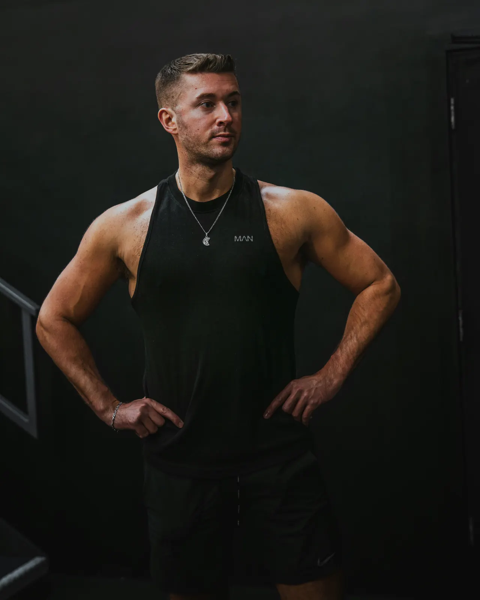

続けられない、三日坊主になってしまう
3か月ボディメイク伴走プログラム
無理なく続く。
3か月で変わる、
習慣と見た目。
無理な食事制限なし。日々のチャット伴走で、あなたのペースで続けられる。対面+オンラインで、3か月後の変化を実感。
忙しい社会人・運動初心者の方でも始めやすい内容です。
- 無理な食事制限なし
- 日々のチャット伴走
- 対面+オンライン
こんなお悩みはありませんか？
多くの方が同じ悩みを抱えています
停滞期で諦めてしまう
リバウンドを繰り返してしまう
運動習慣がまったくない
食事管理が苦手、何を食べればいいかわからない
産後太りが戻らない
忙しくて時間が取れない
選ばれる理由
なぜ、多くの方に選ばれているのか
3か月のプログラムで大切にしているのは、「無理なく続けられること」。
あなたのペースで、確実に変化を実感できるサポート体制です。
対面+オンラインの
ハイブリッド対応
都内でのパーソナルセッションと、自宅でのオンライン指導を組み合わせ。忙しいあなたのライフスタイルに合わせて柔軟に対応します。

日々のチャット伴走で
習慣化をサポート
毎日のチャットで食事や運動の報告・相談が可能。小さな疑問もすぐに解消できるから、モチベーションを保ちながら続けられます。
無理な食事制限なし
習慣化重視のアプローチ
極端な糖質制限や断食は一切なし。あなたの生活に合った「続けられる食事」を一緒に見つけていきます。3か月後も続く習慣を作ります。
プログラム内容
3か月で変化を実感できる充実のサポート
対面セッション、食事アドバイス、日々のチャットサポートまで。
あなたの変化を全面的にサポートします。
月4回の対面セッション
都内のパーソナルジムで、フォームチェックやメニュー調整を実施。週1回のペースで確実にステップアップ。
自宅トレーニングメニュー
ジムに行けない日も安心。自宅でできるトレーニングメニューを個別に提案します。
食事アドバイス
無理な制限はなし。あなたの生活に合わせた、続けられる食事プランを一緒に作ります。
毎日のチャットサポート
食事や運動の報告、疑問点の相談をいつでもチャットで。24時間以内に返信します。
定期的な進捗確認
体重・体脂肪率・見た目の変化を定期的に記録。データで変化を実感できます。
モチベーション管理
挫折しやすいタイミングを見逃さず、適切なアドバイスでサポート。あなたのペースを大切にします。
3か月の流れ
1ヶ月目
- 現状把握・目標設定
- 基礎トレーニング習得
- 食事記録の習慣化
- 体の使い方を学ぶ
2ヶ月目
- 負荷を上げて強化
- 食事内容の最適化
- 見た目の変化実感
- モチベーション維持
3ヶ月目
- 目標達成への追い込み
- 卒業後の習慣設計
- セルフメンテナンス
- リバウンド防止策
実績
多くの方が変化を実感しています
※ 結果には個人差があります。掲載内容は本人の同意を得て匿名化しています。
30代前半・女性
3ヶ月
体重 -6.2kg / 見た目（ウエスト周り）改善
週1対面+日々チャット、食事は写真共有でフィードバック。
「体重が落ちただけでなく、食事の考え方が変わってリバウンドしにくくなった」との声。
40代・男性
3ヶ月
体重 -4.8kg / 体脂肪率 -3.5%
週1対面+オンライン月1回、食事は週2〜3回まとめて相談。
「仕事が忙しくても習慣化できた」と継続力を実感。
20代後半・女性（産後）
3ヶ月
体重 -5.1kg / 肩こり軽減・睡眠改善
対面は隔週、オンラインでフォーム確認+日々チャット。間食コントロール中心で、無理なく習慣化。
※ 本プログラムは医療行為ではありません。健康上の懸念がある場合は医師にご相談ください。
※ 表示している数値は実際の事例ですが、同様の効果を保証するものではありません。
料金
納得してから始められる料金案内
まずは価値と安心材料をご確認いただき、そのうえで料金をご案内します。
3か月で「続く習慣」をつくるサポート
- 週1回の対面セッションでフォームと進捗を確認
- 食事アドバイスと毎日のチャットで迷いをその場で解消
- 生活リズムに合わせてメニューを都度調整
安心してご相談いただくための約束
- 強引な勧誘なし：その場で契約を迫ることはありません
- 合わなければ断ってOK：遠慮なくご判断ください
- 返金対応は規約に基づきます：詳細は無料カウンセリングでご案内します
- 分割可：月々 ¥99,000 × 3回 にも対応しています
3か月ボディメイクプログラム
全12回セッション + 食事・チャット伴走サポート
¥297,000 （税込）
分割払い可：月々 ¥99,000 × 3回
※ 表示価格はすべて税込です
この料金に含まれる内容
全12回 + 日々の伴走サポート
- 月4回の対面パーソナルセッション（各60分）
- 自宅トレーニングメニュー作成
- 食事アドバイス・プラン作成
- 毎日のチャットサポート（原則24時間以内返信）
- 定期的な進捗測定・記録
- プログラム期間中のメニュー調整無制限
- 入会金・登録料は不要です
- セッション場所により別途費用が発生する場合があります（事前にご案内します）
- 分割方法：銀行振込（月払い） / クレジットカード分割
- 分割回数や手数料の詳細は無料カウンセリングでご案内します
無理に決める必要はありません。無料カウンセリングで内容を確認してからご判断ください。
まずは無料カウンセリングで相談する無料カウンセリング
まずは無料カウンセリングでお話しませんか？
60分の無料カウンセリングで、あなたの目標や悩みをじっくりお聞きします。
プログラムが合うか、一緒に確認しましょう。
カウンセリングの流れ（約60分）
ヒアリング
約20分現在の状況、目標、お悩みを詳しくお伺いします
目標設定
約15分3か月で達成可能な具体的な目標を一緒に考えます
プログラム説明
約20分サポート内容、スケジュール、料金を詳しくご説明します
質問・相談
約5分不安なこと、気になることは何でもご質問ください
カウンセリング実施情報
- 実施方法：
- オンライン（Zoom）または対面（都内）
- 対応エリア：
- 都内（主に山手線沿線〜都心部）
- 予約枠：
- 火・木 10:00〜18:00 / 土 9:00〜12:00
- キャンセル：
- 前日18:00まで変更可。当日キャンセルは原則不可（やむを得ない事情はご相談ください）
無料カウンセリングを予約する
※ TimeRexの予約ページに移動します
安心してご相談ください
不安なく始められる環境を大切にしています
強引な勧誘は一切ありません
カウンセリングで無理に契約を迫ることはありません。じっくり考えて、納得してからお申し込みください。
合わなければ断っていただいてOK
プログラムが合わないと感じたら、遠慮なくお断りください。「合わない」は悪いことではありません。
相性を確認してから始められます
無料カウンセリングで、トレーナーとの相性やプログラム内容をしっかり確認できます。
まずは気軽にお話ししましょう
カウンセリングは「話を聞いてみる」だけでも大歓迎です。
無理な勧誘は一切ありませんので、安心してご予約ください。
あなたの目標達成を、本気でサポートしたいと思っています。
ご不明点があれば、お気軽にお問い合わせください
contact@bodymake-yuta.com
よくある質問
FAQ
その他のご質問は、お気軽に無料カウンセリングでお聞きください
問題ありません。初回で体力・既往歴・運動習慣を確認し、基礎から無理なく始めるメニューを組みます。
極端な制限は行いません。外食やお酒がある生活でも続けられる現実的なルールを一緒に作ります。
対面+オンラインのハイブリッドで対応します。忙しい週はオンラインフォロー比率を上げるなど調整可能です。
都内（主に山手線沿線〜都心部）で対応しています。詳しい場所はカウンセリング時に相談して決定します。
体調や生活リズムに合わせて調整して進めます。必要に応じて医師への相談をお願いする場合があります。
前日18:00まで変更可。当日キャンセルは原則不可（やむを得ない事情はご相談ください）。
その他のご質問やご不明点がございましたら、お気軽にお問い合わせください
contact@bodymake-yuta.com
3か月後の自分を、想像してみてください
無理なく続けられる習慣で、見た目も気持ちも変わる。
その第一歩を、無料カウンセリングから始めませんか？
※ 所要時間：約60分 / オンラインまたは対面
※ 強引な勧誘は一切ありません
- 完全個別対応
- 無理な勧誘なし
- 当日予約可能
無料PDFプレゼント
無料PDFを受け取る
まずは無料カウンセリングがおすすめです。資料を先に見たい方向けに、無料PDFもご用意しています。
最短で無料カウンセリングを予約する
※ 迷っている方向けに、下のフォームから無料PDFも受け取れます
このPDFで学べること
- 無理なく続けられる食事管理の基本
- よくある失敗パターンと対策
- 外食時の選び方のコツ
- モチベーション維持のヒント
送信ありがとうございました
ご入力いただいたメールアドレス宛に、ダウンロード案内メールをお送りします。
すぐに確認したい方は、こちらからもダウンロードできます。
内容がご自身に合いそうなら、無料カウンセリングで具体的な進め方をご案内します。
無料カウンセリングを予約するPDFをご覧いただいた後、さらに詳しく知りたい方は無料カウンセリングでお話しましょう